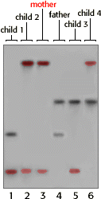
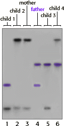
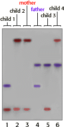

DNA Forensics Problem Set 1
Problem 2: Determining Paternity
Results from a single locus probe DNA fingerprint analysis for a man and woman and their four children are shown in the autoradiograph below. Which child is least likely to be the biological offspring of this couple?
Tutorial
Inheritance of bands| Each child receives one band from their mother, and one from their father. The first step in interpreting this autoradiograph is to identify which bands were contributed by the mother. Then the remaining bands can be compared to the alleged father to determine if he is included or excluded. |
|   |
| All of the children have 1 band from the mother and 1 band from the father, with the exception of child 2. Child 2 appears to share two bands with the mother and none from the "father." Obviously, the mother could not have contributed both bands to her child. | |
There are several possible explanations for this banding pattern:
The band contributed by the biological father just happened to match one of the mother's bands. |
 |


The Biology Project
University of Arizona
Revised: September 2000
Contact the Development Team
http://biology.arizona.edu
All contents copyright © 1996-2000. All rights reserved.